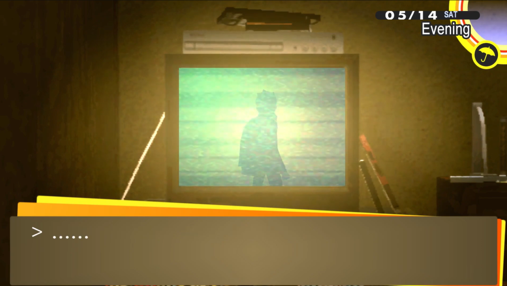

Reason#2: Making Friends Is Lowkey A Gamble

It is well-known to Persona 4 players that each and every one of the potential social links comes along with their life-changing backstory. For example, befriending an infamous biker gangster:
In Persona 4, this would lead to:
- Saving a teenage boy’s life
- You being closer in reaching out to the truth
- Handcrafted materials
- Dramatic cutscenes
Meanwhile, doing such risky acts in real life might be the other way around:
- Having the need for someone to save your life
- You are now closer to the light and far away from your home
- Definitely LEGAL handcrafted materials
- Dramatic cutscenes (for your family)
In no way are these discrimination against biker gangs as I do not mention nor include all members. Instead, please refer to this as a reality check, and not all events in the game should be imitated.
← Back to Main Page